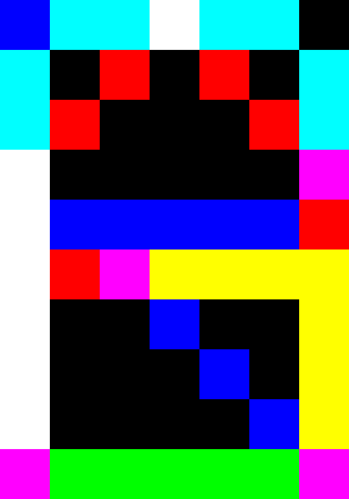

If the question doesn't have an answer, answer "null" instead. Best of luck
1. Calculate: 14 + 28
Answer (Number):
2. Calculate: ((109 × 5) - (25 × 5)) ÷ 10
Answer (Number):
3. A square with side length: 52 ÷ 8 (cm). What is the area of the square in cm² (round to the nearest integer)
Answer (Number):
4. Find x: 5x - 168 = 42
Answer (Number):
5. Find x: 14x² - 1176x + 24696 = 0
Answer (Number):
6. Copy: А𝖱𝔾
Answer (String, Unicode sensitive):
7. Complete the sentence: "I don't want to be called ____"
Answer (Word):
8. n books with the same dimension was stacked cover to cover creating a rectangular prism with height h. n ≠ h, n ∈ ℕ, n mod 5 = 3. The thickness of the book is x (cm) where x ∈ ℕ and x ≠ 1. h = 15 cm. Find n
Answer (Number):
9. Same setup as question 8. The volume of the rectangular prism is 90 cm³. Find the volume of a book in cm³
Answer (Number):
10. What is the hex code of the background color?
Answer (Hex):
11. -.-. --- .--. -.-- ---... / -.-. --- -.. .
Answer (Morse code):
12. Choose the correct answer:
A: 5 + 3 = 48 ÷ 3
B: 9 ⋅ 4 = 216 ÷ 6
C: 9 - 4 = 54 ÷ 3
D: 71 + 94 = 81 ÷ 9
Answer (A, B, C, or D):
13 + 14 + 15. Calculate the mean, median, and mode of the value
| Element number | Value |
| 1 | 17 |
| 2 | 56 |
| 3 | 5 |
| 4 | 1 |
| 5 | 24 |
| 6 | 5 |
Mean (Number):
Median (Number):
Mode (Number):
16 + 17. Correct the sentence: "I like apples, they like oranges."
Answer (Coordinating conjunction with "and"):
Answer (Seperate sentence (Most common)):
18 + 19 + 20 + 21. Copy the direction (with an example):
187
296
345
Answer:
vv<
v+^
>>^
0BCD
1AFE
2987
3456
22. Copy the direction (Same as question 18 + 19 + 20 + 21): RFVBNMJUYHGT (QWERTY keyboard)
Answer (String):
23. If "one" is an SI unit with format [prefix]ones. Represent 4523.673 digit by digit (with an example)
Number: 23.3
Answer: two decaones three ones three deciones
Answer (String):
24. Calculate: 10₆(10₂ + 10₅)
Answer (Number, base-10):
25. Calculate: (32₄ ⋅ 11₅ ⋅ 62.4₈) mod 20₁₄
Answer (Number, base-10):
26. Count the total number of dots: "Every place can be your home."
Answer (Number):
27. What text color is following text: Red
Answer (Hex):
28. How many questions are left after you answered this?
Answer (Number):
Answer (Number):
30. Red, Green, Blue:

Answer (String, case-insensitive):
31. Roll two four-sided dice with each side being numbered from 1 to 4. Roll two two-sided dice with each side being numbered from 0 to 1. What are the chances that the sum of 4 dice equals 5, the sum of the two four-sided dice is odd, and the sum of the two two-sided dice is even?
Answer (Percent, dot as decimal seperator, percent symbol required):
32. Find the shortest path to all six points. You start at A. You don't need to return:
A = (0, 0)
B = (2, 3)
C = (5, 5)
D = (6, 2)
E = (3, 1)
F = (4, 0)
Answer (Example: A>B>C):
33. Kvoh wg hvs eisghwcb biapsf?
Obgksf (Biapsf):
34. Error: Download program
Answer (Number):
35. Read LerpAB41. Write the full hand string for 42 in 16AB encoding method
Answer (String):
36. Read LerpAB3. What is the 42nd word after "[Setting: City]"
Answer (Word):
37. Same as question 14 of LerpAB28
Answer (Yes or no):
38. Copy: "intersection"
Answer (Word):
39. Subtract the title of LerpAB8 with the answer of question 38 of this
Answer (String):
40. BELIEVE IN YOURSELF!
Answer (Copy above, after the question number and before the next line):
41. How many questions have you answered correctly?
Answer (Number):
42. What is the meaning of life?